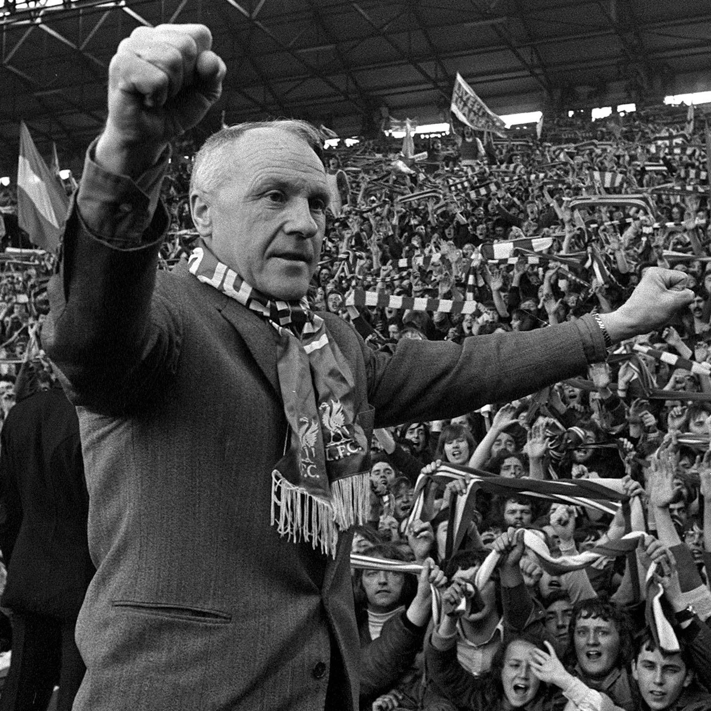
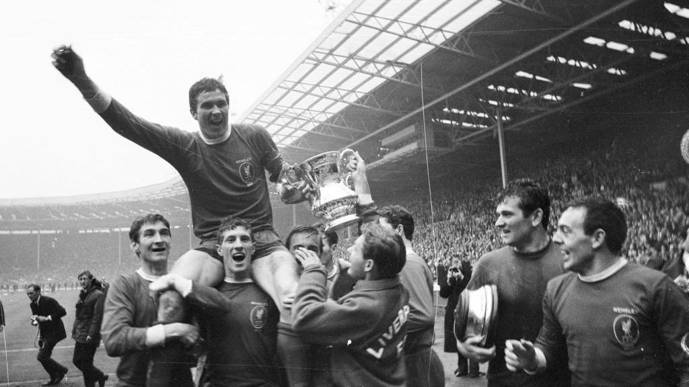
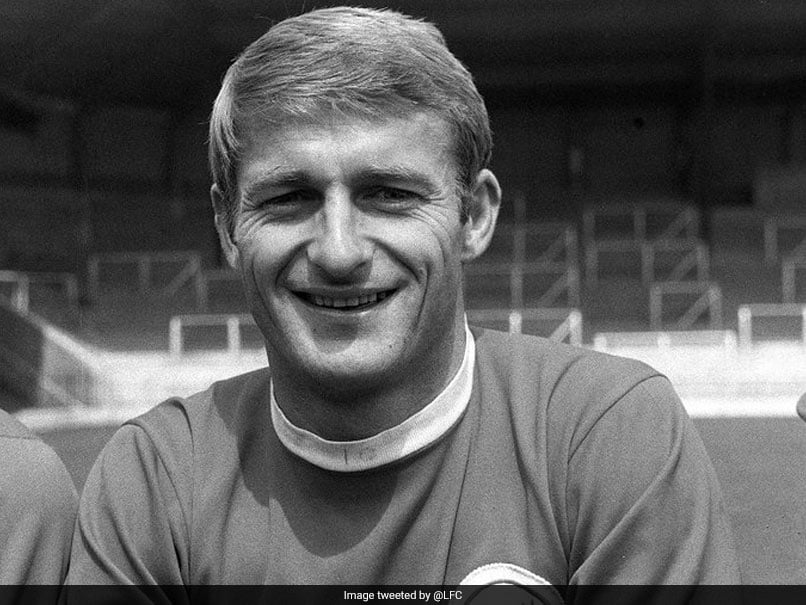
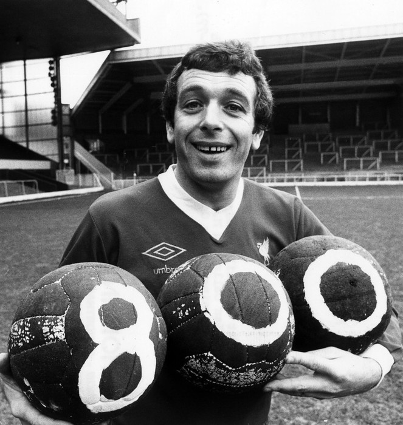
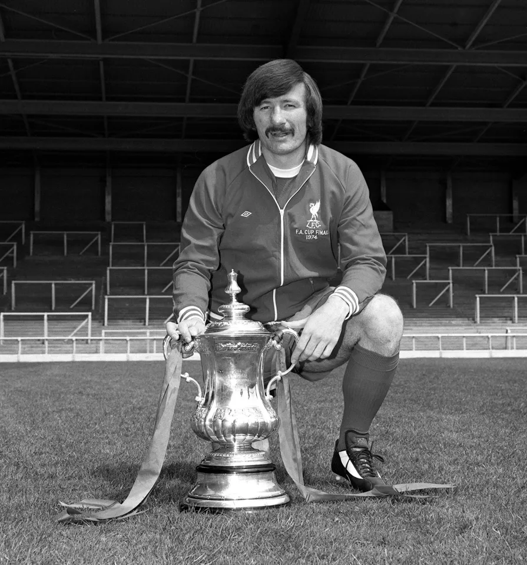

Shankly Era (1959–1974)

Bill Shankly
Architect of modern Liverpool FC.
Architect of modern Liverpool FC.

Ron Yeats
Commanding centre-back and Shankly's captain.
Commanding centre-back and Shankly's captain.

Ian St John
Key forward in Liverpool's rise.
Key forward in Liverpool's rise.

Roger Hunt
2nd highest scorer for liverpool of all time
2nd highest scorer for liverpool of all time

Ian Callaghan
Recorded most games played ever till now..
Recorded most games played ever till now..

Tommy Smith
The Defensive barrel
The Defensive barrel